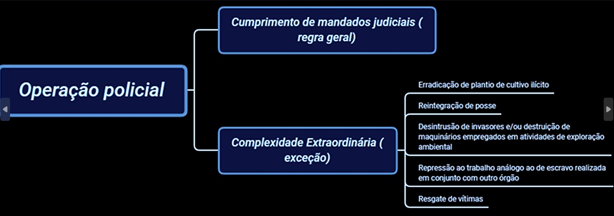
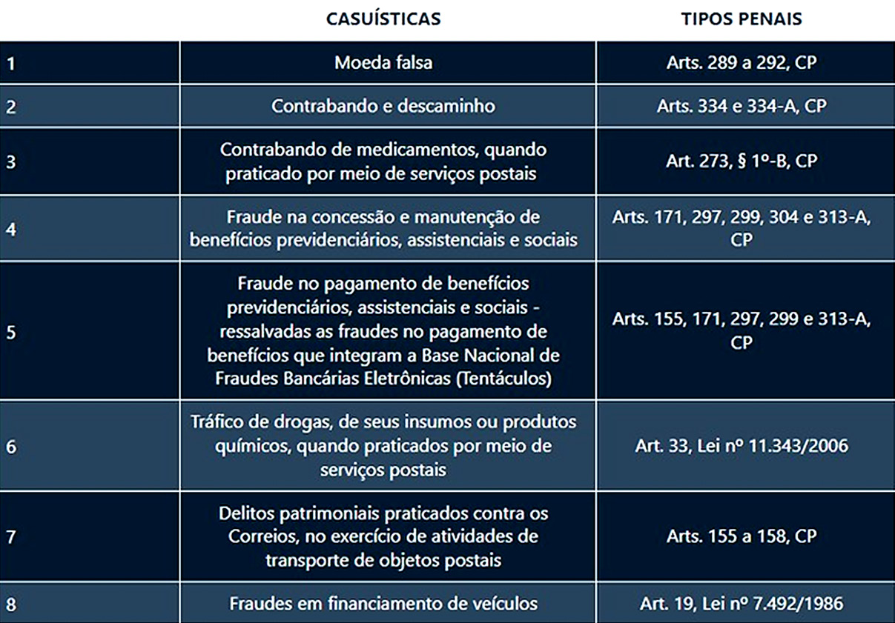
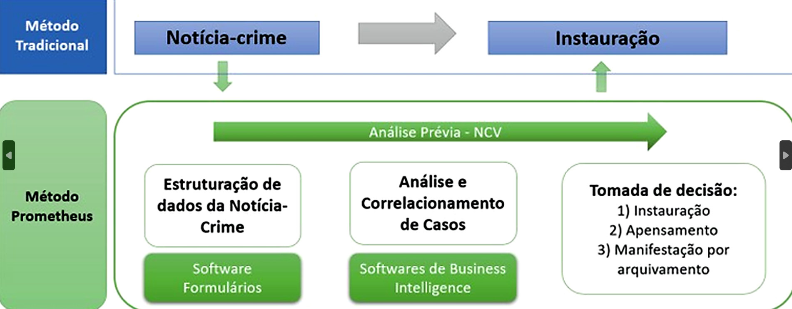
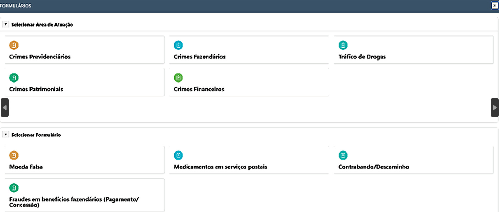
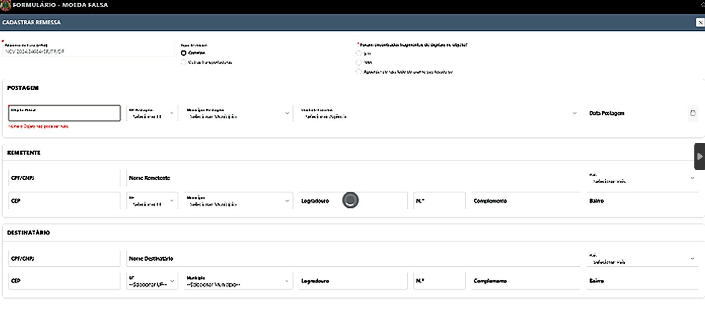
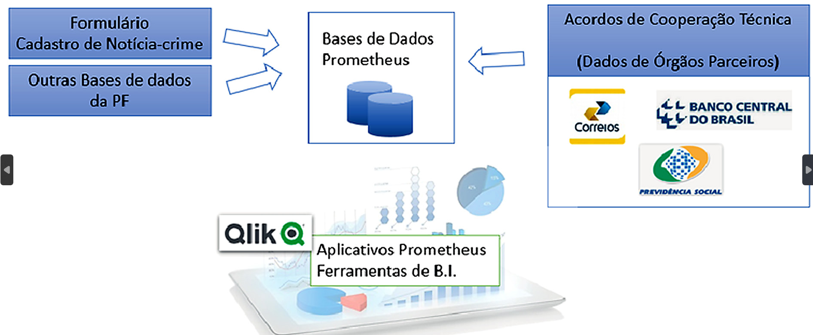
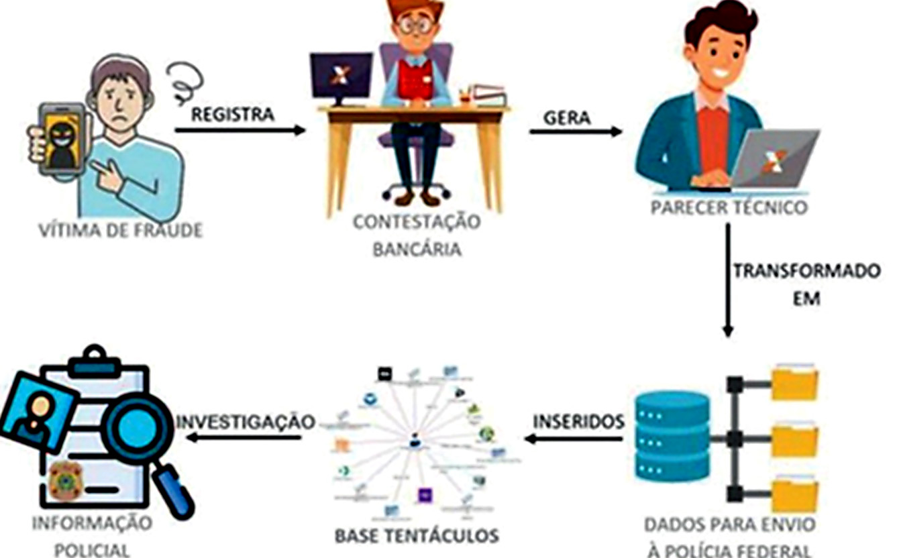
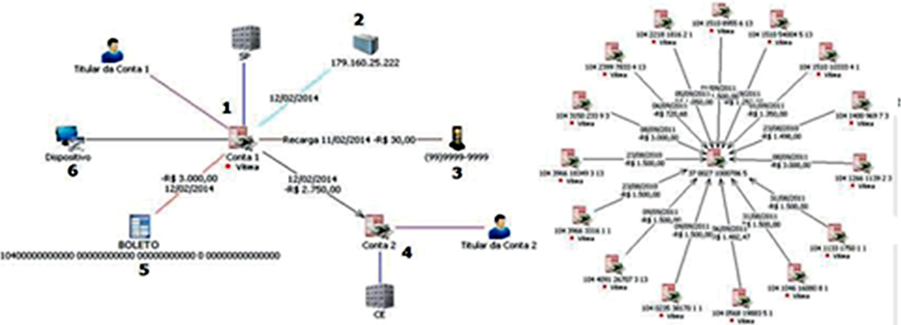
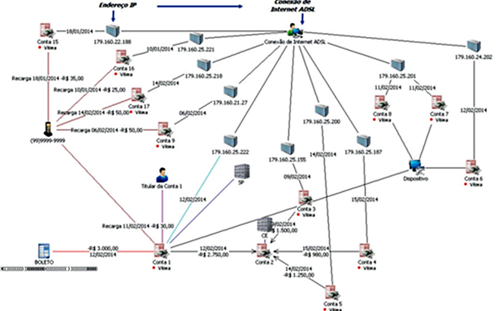

Nos últimos anos, a Polícia Federal passou a adotar modelos distintos de gerenciamento investigativo, estruturados conforme a estratégia operacional empregada. O tipo de investigação influencia diretamente a forma de organização da equipe, a distribuição de atribuições, o fluxo de informações e a gestão dos recursos humanos e tecnológicos envolvidos.
Nas investigações de caráter proativo, o gerenciamento demanda planeja mento prévio, definição clara de alvos estratégicos, acompanhamento contínuo de dados sensíveis e controle rigoroso de técnicas especiais de investigação. A complexidade dessas apurações, marcada pelo volume de informações e pela uti lização de meios invasivos de produção probatória, exige estrutura organizacional própria, com equipes dedicadas, divisão funcional de tarefas, análise permanente de inteligência e coordenação centralizada.
Por sua vez, nas investigações de natureza reativa, o gerenciamento tende a ser mais pontual e delimitado ao fato criminoso já conhecido, permitindo condução mais linear dos atos investigativos, com menor necessidade de segmentação estrutural ou monitoramento prolongado de alvos.
Assim, a estratégia investigativa adotada condiciona não apenas os meios probatórios utilizados, mas também o modelo de gestão, a estrutura das unidades envolvidas e o nível de especialização exigido das equipes responsáveis. A seguir, serão examinados os principais formatos organizacionais adotados pela Polícia Federal na condução das investigações e as estratégias operacionais empregadas no enfrentamento da criminalidade.
No que se refere à atribuição investigativa, a Polícia Federal encontra-se estruturada em unidades e setores organizados conforme a matéria ou o tipo de infração penal apurada, como corrupção e desvio de recursos públicos, tráfico de drogas, lavagem de dinheiro, crimes ambientais, contrabando e descaminho, tráfico internacional de armas, crimes patrimoniais contra empresas públicas, crimes eleitorais, crimes cibernéticos e delitos contra a ordem econômica e social, entre outros.
No âmbito da atividade investigativa, a estrutura organizacional costuma operar, como regra, a partir de quatro modelos básicos de unidades: i) unidades generalistas; ii) grandes equipes de inquérito; iii) unidades especializadas em investigações de caráter proativo; e iv) atuação em regime de força-tarefa.
De modo geral, as unidades generalistas e as grandes equipes de inquérito estão mais frequentemente associadas a uma lógica investigativa de natureza reativa, enquanto as unidades especializadas e as forças-tarefa tendem a adotar uma postura mais estruturada e estratégica. Contudo, essa correlação não é rígida nem automática. Na prática, unidades generalistas ou grandes equipes podem lançar mão de técnicas de monitoramento de alvos e métodos próprios de investigações complexas, ao passo que unidades especializadas também podem iniciar suas apurações a partir de fatos concretos e específicos que chegam ao conhecimento institucional.
Assim, embora existam tendências organizacionais, o modelo de unidade não determina, por si só, o método investigativo empregado, sendo a estratégia definida conforme a complexidade do caso, os objetivos da investigação e a necessidade de integração entre diferentes frentes de atuação.
A seguir, serão pormenorizadas as características de cada um desses modelos organizacionais, com a análise de suas estruturas, formas de gerenciamento e impactos na condução das investigações, a fim de demonstrar como a configu ração institucional influencia diretamente a eficiência e os resultados da atividade investigativa.
O quadro comum de atuação dos policiais federais seria o recebimento diário de notícias de crime encaminhadas, em sua maioria, pelo Ministério Público Federal e por outros órgãos de fiscalização e controle, além de informações elaboradas por membros da sociedade que acreditam ter tomado conhecimento de algum crime.
A Instrução Normativa DG/PF nº 255, de 20 de julho de 2023, que trata das atividades de polícia judiciária da PF, é expressa ao nominar estes relatos como “notícia de fato”, cuja previsão se encontra no art. 5º e seguintes da referida norma.
A notícia de fato não flagrancial será cadastrada como “registro de fato” no sistema oficial de polícia judiciária e, em sequência, será remetida para análise por parte da Corregedoria-Geral (Coger/PF), da Corregedoria Regional dos Estados e do Distrito Federal ou do chefe da Delegacia Descentralizada, a depender da atribuição decorrente dos fatos noticiados, conforme dispõe o art. 8º da IN 255/2023-DG/PF.
A análise do registro de fato pode ocasionar o seu arquivamento, caso não haja justa causa para a instauração de inquérito policial (art. 10, caput, da IN 255/2023-DG/PF) ou, se for verificada a ausência de atribuição da Polícia Federal, o registro será encaminhado ao órgão ou instituição competente (art. 10, §2º, da IN 255/2023-DG/PF).
Verificada a plausibilidade, a tipicidade da conduta e a atribuição da Polícia Federal, bem como não existindo circunstâncias que afetem ajusta causa do tipo, o registro de fato poderá ser convertido em (i) notícia-crime, (ii) notícia-crime em verificação ou (iii) registro especial (art. 12 da IN 255/2023-DG/PF), para posterior instauração de inquérito policial.
A relevância dada à solução de casos individuais pode ser observada pelo fato de que um dos principais indicadores para se aferir a efetividade da atuação da Polícia Federal, no âmbito do denominado índice de produtividade operacional (este tema será abordado mais adiante), diz respeito justamente ao índice de casos solucionados e sua relação com o número de inquéritos instaurados por cada unidade.
Investigadores trabalhando sob este modelo não irão conduzir todos os seus casos individuais de forma rigorosamente igual, pois tenderão a dar uma ênfase maior àqueles casos que apresentam a maior probabilidade de serem solucionados, com a identificação de autoria e materialidade do crime apurado.
Pela legislação brasileira, a condução da investigação policial cabe aos ocu pantes do cargo de delegado de polícia, que presidem os inquéritos policiais com autonomia técnico-investigativa, mas sempre contando com o suporte de policiais dos demais cargos. Ressalte-se, neste ponto, que a habilidade requerida dos delegados de polícia federal que presidem as investigações seria uma combinação de conhecimento legislativo, conhecimento das regras procedimentais de produção de provas e a competência para conduzir interrogatórios e oitivas.
De uma forma geral, nas unidades generalistas, os delegados de polícia federal atuam diretamente somente com escrivães de polícia federal, sendo que os demais policiais atuam em grupos especializados em determinadas tarefas, tais como:
I. Núcleos Operacionais: encarregados de atividades de “rua”, como
vigilâncias, levantamentos de endereços, localização de pessoas e
intimações; e
II. Núcleos de Análise: encarregados da análise de dados e da produção
de informações, bem como pela execução de medidas de produção
de prova, como interceptações de comunicações.
Importa destacar que essas possíveis divisões internas não são estanques nem operam de forma rigidamente compartimentada. Embora possa haver uma organização funcional entre núcleos operacionais e núcleos de análise, a dinâmica investigativa frequentemente exige atuação integrada, com intercâmbio constante de informações e colaboração mútua entre os grupos.
A depender da complexidade do caso e das demandas específicas da apuração, policiais originalmente vinculados a determinado núcleo podem atuar em conjunto com outros setores ou ser realocados para compor equipes temporárias, evidenciando a flexibilidade estrutural necessária à eficiência da atividade investigativa.
O principal argumento para a formação de unidades especializadas em investi gações proativas seria o fato de que determinadas formas de crime, ou certos tipos de criminosos, não podem ser efetivamente enfrentados por unidades generalistas, com a utilização de rotinas investigativas simplesmente reativas.
Esse modelo de investigação se aplica especialmente em relação aos criminosos menos “visíveis” e aos tipos mais organizados de crimes, principalmente redes de fornecimento de produtos ilegais, tais como drogas ilícitas e armas, bem como ouro, pedras preciosas e madeiras extraídas de áreas de conservação ambiental ou terras indígenas, além de grupos criminosos que atuam de forma contínua em determinada atividade, como roubo a bancos e roubo de cargas. Há, ainda, o caso de determinados crimes cibernéticos, cometidos no contexto de organização criminosa de caráter interestadual e/ou transnacional.
Em tais investigações, a Polícia Federal recebe informações iniciais sobre atividades ilícitas praticadas por grupos criminosos, devendo atuar de forma proativa para produzir informações qualificadas e úteis à responsabilização criminal dos envolvidos. O objetivo das unidades especializadas em investigações proativas criadas pela Polícia Federal seria identificar os principais grupos e indivíduos-chave envolvidos em tipos relevantes de crimes, com a reunião de informações estratégicas e elementos de prova que possam eventualmente suportar medidas judiciais que levem à interrupção de suas atividades ilícitas.
Unidades especializadas em investigações proativas passaram a ser particular mente comuns nos anos 1990, principalmente na área de repressão ao tráfico internacional de drogas, com a instalação de bases operacionais em locais estraté gicos visando a aperfeiçoar os mecanismos de enfrentamento colocados à disposição da Polícia Federal. Em alguns casos, essas bases operacionais eram instaladas de forma velada e passavam despercebidas até mesmo aos próprios policiais federais lotados na unidade da Polícia Federal local.
Atualmente, ao lado dos Grupos de Investigações Sensíveis (Gise) que lidam com o problema do tráfico de drogas, a Polícia Federal possui diferentes unidades ou grupos especializados em investigações proativas, referentes a programas conduzidos por distintas Diretorias do órgão, como os Gise-Lafin, criados para o combate à prática de crimes financeiros, e os Giase, para combate a crimes ambientas na região amazônica, e a Divisão de Investigação e Operações Especiais (Dioe) da Diretoria de Combate a Crimes Cibernéticos da Polícia Federal.
Por sua vez, nada impede que uma delegacia especializada possa atuar em um modelo proativo de investigação, com equipes destacadas para o emprego de técnicas encobertas de investigação, como geralmente ocorre com as Delegacias de Repressão a Entorpecentes.
Do mesmo modo, unidades de investigação proativa também podem ser encar regadas de investigar um grande evento criminoso, atuando de modo reativo a partir de um crime específico, como, por exemplo, determinado assalto a uma instituição financeira, com a tomada de cidade e uso de explosivos, ou a apreensão de uma grande carga de drogas.
Entretanto, mesmo nos casos em que as investigações se iniciem a partir de um evento específico, as unidades de investigação proativa da Polícia Federal sempre buscam acompanhar a atuação dos grupos criminosos quando o crime está ocorrendo ou pouco antes de seu cometimento, concentrando-se em categorias de infratores e estabelecendo operações de longo prazo contra os alvos específicos, em vez de responder a ofensas reportadas individualmente.
Os criminosos muitas vezes se esforçam para esconder suas atividades ou, pelo menos, para evitar deixar elementos de prova que facilitem sua condenação judicial. Assim, para lidar com esse desafio, as unidades proativas de investigação geralmente usam métodos sofisticados de produção de provas e planos estratégicos para a obtenção de informações, realizando operações suficientemente abrangentes para explorar todas as ramificações e efetuar a captura de uma grande rede de criminosos.
O terceiro modelo de investigação desenvolvido pela Polícia Federal se refere às grandes equipes de inquérito. Claramente uma forma “reativa” de investigação, esse modelo se refere à formação de um time reforçado de investigadores, sob a direção de um delegado de polícia federal, em resposta a um grave crime ou uma série de ofensas.
A forma de gerenciamento dessas investigações tem evoluído ao longo dos anos, embora preserve seus elementos estruturantes. A decisão de se estabelecer uma grande equipe de inquérito é determinada por um número de fatores, incluindo a gravidade da ofensa, a existência de crimes conexos ou praticados em série, a atenção recebida pela imprensa, a grande quantidade de informações reunidas ou a complexidade das técnicas de investigação a serem empregadas.
Umas das principais características das grandes equipes de inquérito é o seu caráter temporário, com a desmobilização da equipe de inquérito na medida em que as investigações vão sendo encerradas ou o ímpeto investigativo arrefecido pelas dificuldades encontradas na obtenção de materiais probatórios.
De uma forma geral, as grandes equipes de inquérito são formadas por policiais do próprio local onde teve início as investigações, ou compostas por policiais recrutados de outros estados e delegacias. Como exemplo de atuação da Polícia Federal no modelo de grandes equipes de inquéritos, podemos citar as investigações conduzidas no âmbito da Operação Lesa-Pátria.
Verifica-se, nos últimos anos, uma ampliação significativa da atuação da Polícia Federal no enfrentamento da criminalidade violenta no país, com o objetivo de contribuir para a redução dos índices de delitos a ela associados e fortalecer a repressão qualificada às organizações criminosas.
A atuação da Polícia Federal concentra-se, sobretudo, na análise e apuração de crimes praticados por grupos criminosos locais ou regionais, especialmente quando presentes elementos de repercussão interestadual ou internacional, além do aprimoramento do compartilhamento de informações com as polícias estaduais. O dever constitucional de atuar na repressão de crimes interestaduais ou que exijam repressão uniforme decorre do artigo 144, §1º, inciso I, da Constituição Federal.
Com vistas à regulamentação desse dispositivo, foi editada a Lei nº 10.446/2002, a qual dispõe que a Polícia Federal poderá, sem prejuízo da res ponsabilidade das Polícias Civis e Militares dos Estados, proceder à investigação de infrações penais quando houver repercussão interestadual ou internacional que exija repressão uniforme.
A referida lei elenca hipóteses específicas de infrações passíveis de apuração pela Polícia Federal, como violações de direitos humanos, furto, roubo ou recepta ção de cargas, inclusive bens e valores, bem como furto, roubo ou dano praticado contra instituições financeiras, incluindo agências bancárias e caixas eletrônicos. Todavia, observa-se que o rol de crimes estaduais passíveis de investigação pela Polícia Federal vem sendo progressivamente ampliado mediante a inclusão de novos incisos na Lei nº 10.446/2002.
A título exemplificativo, em 2013 foi incluída a adulteração de produtos medicinais (Lei nº 12.894/2013); em 2015, os crimes patrimoniais praticados contra instituições financeiras (Lei nº 13.124/2015); em 2018, quaisquer crimes cometidos por meio da rede mundial de computadores que difundam conteúdo misógino, entendidos como aqueles que propagam ódio ou aversão às mulheres (Lei nº 13.642/2018); e, em 2024, houve nova ampliação para abranger: (i) furto, roubo ou receptação de cargas, inclusive de produtos controlados a que se refere o Decreto nº 24.602/1934 — especialmente pólvoras, explosivos e artigos pirotécnicos — transportadas em operação interestadual ou internacional, quando houver indícios de atuação de quadrilha ou bando em mais de um Estado da Federação; e (ii) furto, roubo ou dano contra empresas de serviços de segurança privada especializadas em transporte de valores, ambos incluídos pela Lei nº 14.967/2024.
A expansão das atribuições da Polícia Federal demanda, paralelamente, o fortalecimento de sua capacidade investigativa, uma vez que suas unidades passam a assumir novas frentes de atuação. Nesse contexto, foram instituídas, nos últimos anos, forças-tarefas coordenadas pela Polícia Federal, com a participação das demais polícias brasileiras, mediante parcerias formalizadas com os governos estaduais.
As forças-tarefas podem ser instituídas para atuação em diversas áreas, como fraudes à previdência social, crimes cibernéticos e crimes financeiros, reunindo servidores de diferentes órgãos de fiscalização e controle em atuação conjunta e articulada. Entre os modelos anteriormente adotados, destacaram-se as Forças- Tarefas de Segurança Pública (FTSP), implementadas em diversos Estados da Federação. Por meio das FTSP, buscava-se otimizar recursos humanos e materiais, promovendo a integração entre a Polícia Federal e as demais instituições policiais, com vistas à repressão coordenada de modalidades criminosas de maior potencial lesivo.
Atualmente, o modelo de integração adotado é a Força Integrada de Combate ao Crime Organizado (FICCO). Trata-se de iniciativa do Ministério da Justiça e Segurança Pública destinada a integrar forças de segurança públicas federais e estaduais, com o objetivo de intensificar o enfrentamento e a desarticulação de organizações e associações criminosas, especialmente nos crimes de tráfico de drogas e armas, furto, roubo e receptação de cargas e valores, além da lavagem e ocultação de bens. Instituídas em todos os Estados da Federação, as FICCOs funcionam mediante Acordos de Cooperação Técnica (ACTs), integrando Polícia Federal, Polícia Civil, Polícia Militar, Polícia Rodoviária Federal e Secretaria Nacional de Políticas Penais, consolidando um modelo de atuação interinstitucional permanente e estruturado.
Do ponto de vista temático, com reflexos sobretudo na supervisão e gestão estratégica das atividades operacionais e de polícia judiciária, atualmente a Polícia Federal se estrutura, no âmbito central, em três diretorias, com suas competências estabelecidas na IN 270/2023-DG/PF, de 15/12/2023 (alterada pela Instrução Normativa DG/PF nº 286, de 9 de agosto de 2024).
A Diretoria de Investigação e Combate ao Crime Organizado e à Corrupção (Dicor/PF) da Polícia Federal é dividida em quatro coordenações-gerais (art. 5º da IN 270/2023-DG/PF), que são:
PF);
(CGDH/DICOR/PF);
Lavagem de Dinheiro (CGRC/DICOR/PF); e
Patrimônio e Facções Criminosas (CGPRE/DICOR/PF).
Nesse contexto, a Diretoria da Amazônia e Meio Ambiente da Polícia Federal (DAMAZ/PF) dispõe, em sua estrutura organizacional, da Coordenação-Geral de Proteção da Amazônia, do Meio Ambiente e do Patrimônio Histórico e Cultural (CGMA/DAMAZ/PF) e da Coordenação-Geral de Estratégia e Planejamento (CGEP/DAMAZ/PF), nos termos do art. 6º da Instrução Normativa nº 270/2023- DG/PF.
Por fim, a Diretoria de Combate a Crimes Cibernéticos (DCIBER/PF) possui, de acordo com suas competências previstas no art. 7 da IN 270/2023, as seguintes unidades temáticas:
CGCIBER/DCIBER/PF;
CGCIBER/DCIBER/PF;
Sexual Infantojuvenil - CCASI/CGCIBER/DCIBER/PF.
Mais recentemente, foi criada, dentre as unidades temáticas da DCIBER/PF, a Unidade de Repressão a Crimes Cibernéticos de Ódio (URCOD/CGCIBER/ DCIBER/PF), cuja institucionalização formal está em andamento.
Cada coordenação-geral subdivide-se em outras unidades, por área temática, possibilitando-se a especialização adequada com o objetivo de a PF cumprir suas funções constitucionais, auxiliando na diminuição da criminalidade.
Importante destacar que cada Diretoria possui suas unidades próprias de inteligência e de gestão estratégica, as quais são fundamentais para o desempenho de suas atividades.
A gestão operacional, assim como a análise dos resultados operacionais de Polícia Judiciária, é obtida pela medição de diversos indicadores operacionais que geram o Índice de Produtividade Operacional - IPO.
A definição do IPO da Polícia Federal é trazida no art. 2º da Portaria DG/PF nº 18.900, de 26 de dezembro de 2023, afirmando que é a
[...] ferramenta de gestão instituída com a finalidade de viabilizar
a comparação entre as unidades regionais da Polícia Federal rela
tivamente à promoção e à execução de atividades operacionais
consideradas prioritárias pela administração do órgão, tendo
como perspectiva o cotejo entre a quantidade de servidores
alocados e os esforços realizados e resultados obtidos.
No tocante às diretrizes que orientam a lógica da metodologia de cálculo do IPO, estas encontram-se previstas no art. 3º da Portaria DG/PF nº 18.900/2023, consistindo em: (i) simplificar a metodologia, (ii) facilitar a compreensão, (iii) favorecer a transparência e (iv) possibilitar a auditabilidade.
Dessa forma, a referida ferramenta possibilita o acompanhamento dos recursos empregados pela Polícia Federal no combate ao crime, além de contribuir com o desestímulo para a prática de novos delitos.
O cálculo do IPO iniciou-se a partir da necessidade de racionalizar e otimizar os escassos recursos humanos e materiais empregados por essa Diretoria, e da iminente necessidade de adesão às boas práticas de gestão estratégica, centralização e normalização de dados estatísticos históricos oriundos de operações de Polícia judiciária, no ano de 2012, a partir do emprego de dados estruturados de indicadores operacionais – contidos nos sistemas QOPS. Após o ano de 2018, passou-se a utilizar os dados operacionais contidos no sistema Palas Pandora.
Importante destacar que o IPO, conforme a atual legislação sobre a matéria, trazida na Portaria DG/PF nº 18.900/2023, possui dois tipos de indicadores: (i) os indicadores transversais, os quais correspondem a 80% (oitenta por cento) do índice e têm por objetivo refletir os aspectos fundamentais e comuns a todas as unidades avaliadas, assegurando aferição uniforme de produtividade operacional em toda a instituição; (ii) os indicadores setoriais, que representam 20% (vinte por cento) do índice, selecionados com base nas particularidades, diretrizes e atribuições de cada diretoria de polícia judiciária, levando em consideração suas áreas de atuação especializadas.
Assim, com o advento do IPO busca-se atingir resultados cada vez mais eficazes, pautando-se em métricas claras, simples e coesas, as quais têm o condão de construir e consolidar mecanismos de monitoramento e avaliação transparentes e auditáveis, buscando sobretudo a busca por um melhor desempenho nas unidades.
Nesse sentido, a Portaria DG/PF nº 18.900/2023 também regulamenta a definição de “operação de polícia judiciária”, a qual é elementar para a apuração do IPO. Há duas possibilidades de enquadramento de um conjunto de ações policiais para que seja considerado uma operação de polícia judiciária: (i) operações de polícia judiciária por cumprimento de mandados judiciais; (ii) operações de polícia judiciária por ações de complexidade extraordinária. As operações de polícia judiciária por cumprimento de mandados judiciais são caracterizadas pelo efetivo cumprimento de medidas judiciais restritivas de direito de natureza ostensiva, isto é, que envolvam o conhecimento do investigado, ou potencial conhecimento.
Ou seja, o cumprimento de mandados de medidas investigativas sigilosas (ex: interceptação telefônica), não é suficiente para caracterizar uma operação para fins estatísticos: a investigação pode até ser tratada como um caso especial e ser cadastrada como operação no sistema corporativo de cadastro de operações23, mas somente será plenamente contabilizada como operação após o cumprimento de medidas ostensivas, isto é, após sua deflagração.
Como exemplo clássico de operação policial decorrente do cumprimento de mandados, temos uma ação em que há cumprimento de mandados de busca e apreensão, ou mesmo de prisão preventiva ou temporária. No entanto, o conceito admite que uma investigação em que foram cumpridas medidas judiciais cons tritivas de patrimônio, tais como o sequestro de bens e valores, seja considerada uma operação, ainda que não seja acompanhada pela expedição de mandados de busca ou de prisão.
Por outro lado, as operações de polícia judiciária por ações de complexidade extraordinária representam aquelas ações em que, ainda que não haja a expedição de mandados judiciais ostensivos, a sua complexidade inerente e sua importância para o órgão, permitem sua classificação como operação. São cinco hipóteses previstas na Portaria:
Art. 16. Configura-se operação de polícia judiciária decorrenteda
complexidade extraordinária de execução quando, independente
do cumprimento de mandados judiciais, ocorrer uma das
seguintes ações específicas:
I - erradicação de plantio de cultivo ilícito;
II - reintegração de posse;
III - desintrusão de invasores ou destruição de maquinário empre
gado em atividade de exploração, em caso de crime ambiental;
IV - repressão ao trabalho análogo ao de escravo em conjunto
com outro órgão; ou
V - qualquer ação que resulte no resgate de vítima.
O diagrama a seguir ilustra as hipóteses que permitem a caracterização de uma operação, conforme representado na Figura 5.
As operações de polícia judiciária são cadastradas e gerenciadas no Sistema Inte grado de Gestão e Análise Criminal – Sigacrim.

Figura 5 - Diagrama com as hipóteses que permitem a caracterização de uma operação.
A orientação é que, tão logo seja identificado que uma investigação detém as características necessárias para a sua classificação como operação policial, o caso deve ser registrado, necessariamente, em sistema oficial de gestão e cadastramento de operações desde seu nascedouro, e não somente após a sua deflagração, já que o cadastro tem por objetivo a articulação entre a autoridade policial condutora da operação, a chefia da delegacia especializada ou da delegacia descentralizada e as respectivas Delegacias Regionais de Polícia Judiciária, constituindo importante ferramenta de planejamento, bem como de gestão dos meios disponíveis e de elaboração de dados estatísticos sobre a produção operacional das unidades da PF.
Quando registrado como potencial operação, esse caso passa a ser tratado como um projeto, deixando de ser encarado como processo ordinário na carga de inquéritos da unidade e submetendo-o a um acompanhamento diferenciado, com maior esforço empreendido para o serviço.
A alimentação do sistema oficial de gestão de operações deve ser contínua até a finalização da operação, com a atualização constante de dados sobre diligências extraordinárias e medidas cautelares sigilosas em andamento (p.ex.: existência de interceptação telefônica em curso, existência de procedimento de cooperação internacional, etc.) e, posteriormente, com a inserção dos dados referentes à deflagração da operação e até mesmo das atividades de análise pós-deflagração.
Ressalta-se que o objetivo do sistema de gestão de operações não é o registro das informações sigilosas obtidas por meio das medidas cautelares, mas tão somente dos dados estatísticos acerca das medidas sigilosas empregadas, visando o aprimoramento da gestão dos recursos disponíveis nas unidades e da gestão da própria investigação.
Por fim, cumpre salientar que as ações proativas da Polícia Federal que resultem em prisões ou apreensões e que não se enquadrem na definição de operações policiais são consideradas eventos operacionais24 , sendo que os eventos opera
No Sistema Integrado de Gestão e Análise Criminal – Sigacrim há um módulo dedi cado ao cadastramento e gestão de eventos operacionais. cionais também podem influir em alguns indicadores do Índice de Produtividade Operacional.
Este capítulo aborda as principais questões relacionadas ao gerenciamento de recursos, pessoas e riscos, que o policial federal enfrentará nas diversas fases de uma investigação.
A intensidade e o nível de cuidado dependerão da própria necessidade da investigação, mas o policial deve estar preparado para administrar e desenvolver de forma eficaz as inúmeras ocorrências, buscando sempre se capacitar para adquirir mais conhecimento e experiência.
Embora caiba ao delegado de polícia federal a condução da investigação policial por meio de inquérito policial (§ 1º do art. 2º da Lei nº12.830/2013), este capítulo se destina a todo policial federal, que muitas vezes será o primeiro a ter contato com o fato criminoso, como durante a imediata ação para conter a prática de uma infração penal, ou mesmo em procedimentos a serem adotados em local de crime e preservação do espaço para a chegada dos peritos criminais e papiloscopistas policiais federais.
A gestão bem-sucedida de uma investigação requer planejamento, organização, controle e motivação. Uma investigação pode envolver o gerenciamento de qualquer um ou de todos os fatores abaixo:
Saber trabalhar com os recursos disponibilizados em sua lotação é uma habilidade necessária para o policial, que antes de tomar decisões que possam impactar o bom funcionamento da sua unidade, deve conhecer suas limitações e dificuldades. O segredo para uma gestão eficaz de recursos é o planejamento e a previsão. Os investigadores devem, na primeira oportunidade, identificar as necessidades de recursos para uma investigação e, em seguida, verificar sua disponibilidade. Isso vai variar a depender do tipo de crime, e se deve ser tratado de forma especial ou comum, neste último incluídos os casos massivos.
Um dos princípios que regem a administração pública, expressamente previsto na Constituição Federal de 1988, é o da eficiência. Ao decidir sobre os recursos necessários, o investigador deve considerar o nível apropriado de resposta inves tigativa, a disponibilidade e o custo dos recursos necessários, e se seu emprego é razoável. Com base no princípio da eficiência, o agente público deve atuar e nortear todas as suas ações e atos administrativos pautando suas ações, princi palmente na área policial, com um bom planejamento da distribuição de meios e recursos disponíveis.
Sobre o planejamento do emprego de recursos humanos e materiais cabe trazer o previsto no art. 2º, § 2º da Instrução Normativa DG/PF nº 255, de 20 de julho de 2023, que regulamenta a atividade de polícia judiciária na Polícia Federal:
“Art. 2º (...)
§ 2º A alocação dos recursos pessoais e materiais atenderá ao
melhor resultado estratégico possível, consideradas a gravidade
e a complexidade dos fatos investigados.”
No âmbito da administração pública, os recursos humanos e materiais são cada vez mais escassos e limitados, e não podem ser empregados com a mesma intensidade em todas as investigações simultaneamente.
Nos inquéritos policiais relativamente simples e rotineiros, que não demandem um esforço investigativo complexo que transcenda os recursos disponíveis e que não tenham potencial de se tornarem operações policiais, sugere-se que a investigação policial seja realizada somente com os recursos ordinariamente disponíveis.
Além disso, sugere-se a adoção de medidas de sistematização e uniformização dos métodos de condução de inquéritos policiais – especialmente os que investi guem fatos de menor potencial ofensivo ou de baixa complexidade – de forma a estabelecer protocolos, processos e modelos neste tipo de atuação (ex: Prometheus; Tentáculos), buscando-se sempre obter o resultado esperado (determinação da autoria, materialidade e circunstâncias) com a maior economia possível de meios e recursos ordinários, mas sempre com a necessidade de instruir esses inquéritos policiais de forma responsável, correta e legal.
A título exemplificativo, recomenda-se especial atenção ao disposto no art. 39 da Instrução Normativa anteriormente mencionada, o qual estabelece que a intimação deve ser realizada por meio célere e eficaz, podendo ocorrer por telefone, correio eletrônico ou aplicativos de mensagem instantânea. Essa diretriz visa conferir maior eficiência à atividade investigativa, evitando o dispêndio desnecessário de recursos humanos e operacionais com deslocamentos para cumprimento presencial (in loco) de atos que podem ser efetivados por meios alternativos igualmente válidos.
Nesse contexto, a comunicação do delegado com os diversos atores da inves tigação e do processo penal se torna imprescindível para o alcance da efetividade investigativa. Nesse particular, a comunicação com os agentes e os analistas se configura em uma boa maneira de manter a mesma “linguagem” estratégica na investigação, desenvolvendo conjuntamente o melhor caminho a ser traçado pela equipe como um todo. Para melhor implementar essa visão, o Delegado de Polícia Federal pode elaborar os ofícios endereçados aos órgãos de perícia criminal, contextualizando as hipóteses criminais investigadas, o que pode ser um fator de grande economia processual e de tempo para o Perito responsável.
Ademais, manter contato com os órgãos de controle (CGU, RFB, TCU, por exemplo) pode poupar ao delegado de polícia federal um tempo precioso ao colocar em prática suas estratégias investigativas.
Outra boa prática adotável: a investigação de delitos que configurem infração penal de menor potencial ofensivo, cujo autor dos fatos poderá ser contemplado com todos os benefícios previstos na Lei n.º 9.099/95 (Juizados Especiais Criminais), pode ser dinamizada, não sendo necessário, em sua ampla maioria, o empreendimento de maiores esforços na identificação do responsável (ou responsáveis) pela prática delituosa, crendo-se usualmente suficiente, tomando-se por exemplo o delito de lesão corporal leve, a inquirição do condutor, de testemunhas, do possível autor dos fatos, e a juntada do laudo pericial do exame de corpo de delito – o que, como amplamente já discorrido, deve ser verificado caso a caso.
Atuando dessa forma, o delegado de polícia federal terá a oportunidade de otimizar a atuação da equipe de investigação, buscando reduzir, em um dado momento, a intensidade do emprego de recursos humanos e materiais nos inquéritos policiais rotineiros, massivos, e relativamente simples, e isso será muito importante pois permitirá o direcionamento desses recursos humanos e materiais aos inquéritos policiais prioritários.
Dessa forma, o delegado de polícia federal, ao receber sua carga de inquéritos, deve relacionar os inquéritos que tramitarão com os recursos usuais - tratados como processos - e os que serão tratados como prioritários – tocados como projetos. O primeiro passo seria conhecer o acervo dos inquéritos existentes em sua carga; depois, fazer um plano de trabalho eficiente e de acordo com os recursos materiais e humanos disponíveis pela equipe de investigação.
Os inquéritos policiais considerados prioritários devem ser os que demandam esforço investigativo concentrado e prazo delimitado para atingimento de um resultado específico, como, por exemplo, fazer cessar a atuação de associação ou organização criminosa em atividade em determinada localidade.
Os casos de tratamento especial são aqueles que necessitam de um tratamento individualizado por parte do delegado de polícia federal, por demandarem a compressão da espiral investigativa (tempo) e a adoção de meios extraordinários de investigação, em razão da sensibilidade dos investigados, do elevado montante de recursos envolvidos, da repercussão política/social ou do envolvimento de organização criminosa, conforme avaliação do delegado de polícia federal, tendo -se em conta os meios disponíveis e as características locais. Aqui, a investigação assume a feição de um autêntico projeto, ou seja, a alocação de recursos humanos, financeiros e materiais especiais por um determinado período para a consecução de um objetivo específico.
Algumas decisões de obtenção de recursos em casos de tratamento especial, assim como o uso de recursos especializados ou tecnológicos, serão impulsionadas principalmente pelas políticas e orçamentos disponíveis para a unidade investigativa, que são definidos de acordo com as prioridades locais.
Com esse gerenciamento inicial, ganha peso o direcionamento da energia do Estado para projetos específicos, priorizados entre as diversas demandas existentes, a fim de concentrar o esforço investigativo (e os recursos necessários) para elucidação de determinadas infrações penais ou para a desarticulação de grupos criminosos, haja vista que normalmente esses inquéritos policiais têm potencial de se tornarem operações de polícia judiciária, inclusive de natureza especial, conforme o índice de produtividade operacional (IPO).
Caso seja necessário, poderão inclusive receber recursos humanos e materiais adicionais. Dependendo de cada caso, de maneira excepcional, o delegado chefe da delegacia descentralizada, o Delegado Regional de Polícia Judiciária (DRPJ) ou mesmo os diretores de Combate à Corrupção e ao Crime Organizado e à Corrupção (Dicor), da Amazônia e Meio Ambiente (Damaz) e de Combate a Crimes Cibernéticos (Dciber) poderão atuar como patrocinadores do projeto de investigação, provendo de maneira temporária mais recursos humanos e materiais para o atingimento dos objetivos do projeto.
Para isso, faz-se necessário que o presidente do inquérito policial (gestor da inves tigação) faça o encaminhamento de um plano de ação investigativa contendo todos os detalhes dos recursos extraordinários necessários para o patrocinador responsável. Casos de tratamento comum e casos massivos, por sua vez, não demandam a utilização de meios extraordinários de investigação, uma vez que os suspeitos não costumam ser de sensibilidade investigativa diferenciada, o montante de recursos envolvidos é baixo, não há relevante repercussão política e social e nem o envolvi mento de organização criminosa. Onde os recursos são limitados, os investigadores devem priorizar as necessidades da investigação de acordo com os recursos dispo níveis. Rotineiramente, as investigações na Polícia Federal irão começar apenas com a própria equipe policial designada para tratar da matéria.
Nenhuma operação da Polícia Federal, nem mesmo as denominadas “grandes operações”, começa com uma grande quantidade de policiais na equipe de inves tigação. Claro que, à medida que os trabalhos investigativos vão avançando, é possível que se identifique a necessidade de se alocar mais recursos humanos para aumentar a capacidade investigativa e o aproveitamento das oportunidades surgidas.
Diante desse contexto, o gerente do projeto de investigação (delegado de polícia federal) deve, após realizar a devida análise de necessidade, apresentá-la aos patrocinadores mais próximos (chefe imediato, delegado regional de polícia judiciária, chefe de delegacia descentralizada) para que possam avaliar a possibi lidade de alocação de mais recursos ao projeto.
Recomenda-se que, em razão da realização dos trâmites burocráticos necessários, essa solicitação de disponibilização de mais recursos humanos para a realização dos trabalhos, com prazo delimitado do projeto, seja feita da maneira mais antecipada possível a fim de se evitar perda de oportunidades investigativas durante os trabalhos policiais.
Para subsidiar financeiramente uma investigação policial, há a possibilidade de utilização de suprimento de fundos do tipo sigiloso, especialmente para despesas extraordinárias e urgentes decorrentes das operações policiais. A instrução normativa nº 215-DG/PF, de 23 de dezembro de 2021 (alterada pela IN 246/2023-DG/ PF), regulamenta a concessão, a aplicação e a comprovação de Suprimento de Fundos para custeio de despesas decorrentes das atividades peculiares à Polícia Federal.
Por outro lado, nos inquéritos que não demandam maiores investimentos, sugere-se a adoção de medidas de sistematização e uniformização dos métodos de condu ção de inquéritos policiais – especialmente os que investiguem fatos de menor complexidade –, de forma a estabelecer protocolos, processos e modelos nesse tipo de atuação, desde o recebimento da notícia de crime até a elaboração de relatório concluindo o inquérito policial, buscando-se sempre obter o resultado esperado (determinação da autoria, materialidade e circunstâncias) com economia de meios e recursos ordinários.
O gerenciamento de pessoas é uma atividade fundamental em nossas vidas. Gerenciamos nossos relacionamentos com filhos, pais, colegas de trabalho, amigos, vizinhos. Algumas pessoas executam essa atividade sem maior estudo ou planejamento e, ainda assim, obtêm excelentes resultados.
Contudo, gerenciar de modo eficaz as pessoas ao nosso redor não é uma habilidade inata e, assim como tornar-se um bom investigador, pode ser aprendida e desenvolvida.
Qualquer investigação policial envolve ao menos duas pessoas: o autor de um delito e um investigador. Contudo, na prática, dezenas de pessoas gravitam ao redor dela, como, por exemplo:
INSS, Inmetro, Ibama, Funai, Forças Armadas, guardas municipais);
Cada integrante dos grupos acima tem um interesse diferente na investigação, e isso guiará sua colaboração ou sua oposição. Enquanto um investigado pode ser colaborativo, mas, usualmente, pouco oferece para a apuração, vítimas podem ser guiadas por algum sentimento próprio e ou deixar de apontar a autoria de determinados delitos, ou atribuir a culpa a um inocente.
Por sua vez, um integrante de órgão parceiro pode agir de forma desinteressada se vislumbrar que sua colaboração não lhe renderá frutos profissionais. Todos esses cenários devem ser sopesados pelo delegado de polícia federal, a fim de que a apuração da autoria, da materialidade e das circunstâncias de um crime possa se deslindar positivamente.
A aptidão de gerenciar todo o recurso humano disponível é uma habilidade que os policiais federais devem cultivar durante toda sua carreira, pois, como em um jogo de xadrez, a investigação não pode prescindir de peças. Além de dispor de todas elas, é preciso conhecer todas as suas particularidades para potencializar suas habilidades individuais e coletivas.
Essa capacidade de gerenciamento pode ser maximizada com o estudo, e a própria Academia Nacional de Polícia disponibiliza cursos como “A Arte de Cuidar da Sua Equipe” e “Habilidades Básicas de Liderança” para o desenvolvimento desse processo.
As principais habilidades que podem ser desenvolvidas para se gerenciar pessoas em investigações são:
, a qual, em síntese, distingue as personalidades em: dominantes, comu nicadores, estabilidade e conformidade. Trata-se de uma de várias ferra mentas das quais podem dispor líderes de organizações empresariais para mapear competências, formar equipes e distribuir funções. As pessoas com traços de dominância gostam de monopolizar a atenção e tendem a ser centralizadoras; aquelas que preferem conversar e se comunicar acabam apresentando propensão à procrastinação; os rotulados na faixa da estabilidade gostam de contemporizar, e se aproximam dos comuni cadores; e os que se agarram à conformidade se sentem mais à vontade quando há rotina e ausência de contato pessoal. Essa é apenas uma das ferramentas que podem auxiliar o delegado de polícia federal a identificar o perfil das pessoas em torno da investigação, e, assim, gerenciá-las da melhor forma possível. A aplicação prática desse instrumento encontra-se ilustrada na Figura 6 abaixo.
Perceber como vítimas e testemunhas reagem à investigação e responder positivamente a esses sinais pode permitir que, com o estabelecimento da confiança, a colaboração aumente.
Figura 6 – Perfil DISC
RIBAS, Alexandre. Disc: tudo o que você precisa saber, mesmo. Ed. Success for you, 2019.
Ademais, é importante que o delegado de polícia federal ou o policial designado para encabeçar determinada equipe compreenda a diferença entre chefiá-la e liderá-la. O chefe é o detentor do poder, que é a faculdade de forçar ou compelir alguém a fazer sua vontade, por causa de sua posição ou força, mesmo que a pessoa preferisse não o fazer26 . Já a liderança é a habilidade de influenciar pessoas para trabalharem entusiasticamente visando a atingir os objetivos identificados como sendo para o bem comum – no caso, a identificação de autoria, materialidade e circunstâncias de um delito. E como influenciar as pessoas dessa forma? HUNTER menciona que o líder é alguém que identifica e satisfaz as necessidades legítimas de seus liderados e remove todas as barreiras para que possam exercer suas funções. Para liderar, você precisa aprender a servir.
A atividade policial é arriscada por natureza. Em atividades ostensivas ou mesmo no desempenho de funções administrativas, o policial precisará estar preparado para enfrentar riscos que podem causar ameaças à sua própria vida. Para lidar com os riscos da profissão, é exigido do policial uma formação completa, treinamentos contínuos e dedicação. É possível afirmar que o gerenciamento de riscos está relacionado à diminuição HUNTER, James C. O monge e o executivo: uma história sobre a essência da lide rança. Editora Sextante, 2004. de incertezas. Nesse contexto, mostra-se fundamental que as decisões sejam adotadas com base no máximo de informações alcançáveis, a fim de que tudo não se resuma a uma questão de sorte ou azar. Considerando que os riscos existem por si sós, o que se pretende é o conhecimento da situação e do que pode impactar o resultado da ação. Os policiais são obrigados a identificar, avaliar e gerenciar os riscos para prevenir ou reduzir a probabilidade de danos a:
A polícia está constantemente tomando decisões sobre situações em que o sucesso não está garantido. Todas as atividades da Polícia Federal são, portanto, suscetíveis a risco. A investigação não é exceção. As áreas de risco específicas envolvem:
parâmetros da investigação (exemplo: deixar de considerar as implicações mais amplas e ter um foco muito estreito; deixar de atribuir tempo ou recursos suficientes);
coleta e apresentação de evidências (exemplo: aceitar informações sem corroborá-las com outras diligências, permitir que as evidências se tornem inidôneas, entrevistas falhas ou inobservância dos cuidados necessários em local de crime);
os policiais (exemplo: “embaraçando” a investigação ao não lhes fornecer informações relevantes para cumprir uma diligência policial).
Considerando os impactos negativos, é certo que os riscos da atividade policial serão minimizados com um bom planejamento. Uma vigilância de um investigado, e até as ações mais simples, como a entrega de intimações, necessitam de um prévio levantamento dos dados para avaliar os riscos a que o policial estará sujeito e de que forma será possível reduzir a probabilidade de danos.
O Núcleo de Operações de cada unidade é responsável pelo plano ope racional para satisfazer a necessidade da missão a ser cumprida e minimizar a ocorrência de danos que possam resultar dessas ações. O plano operacional deve ser claro, adequado e flexível o quanto possível. Nele devem ser incluídas as possibilidades de auxílio, orientação, informação e treinamento. Ademais, os investigadores devem estar familiarizados com a avaliação de risco e os processos de gerenciamento de risco.
Em regra, as falhas no trabalho policial estão relacionadas à ausência de um plano ou às incorreções na sua construção.
As medidas escolhidas para lidar com o risco podem variar de relativamente simples, como a orientação sobre como cumprir determinada diligência, até as complexas – por exemplo, o policial cumprir mandado de prisão em ambiente conflagrado. Em todo o caso, a resposta escolhida deve ser legal, adequada, necessária e ética. Para gerenciar o risco, os investigadores devem ser capazes de:
Federal;
O planejamento da operação que aborda a avaliação de risco aumenta a probabilidade de sucesso em condições incertas. Ao adotar uma abordagem de avaliação de risco, a decisão de um investigador será mais facilmente justificada caso ocorra algum dano. Para a solidez e legitimidade do processo decisório, impõe-se a observância de determinados elementos essenciais, a saber:
Durante o curso de uma investigação, a avaliação de risco deve estar sujeita a revisões regulares para garantir que os riscos identificados foram gerenciados de forma adequada. Se quaisquer novos riscos forem identificados ou a natureza da investigação mudar significativamente, uma nova avaliação de risco deve ser realizada.
O controle e a fiscalização da investigação policial são, sem sombra de dúvidas, os maiores em toda a administração pública. Há controles internos, os quais podem ser desempenhados por corregedorias regionais e gerais e comissões de ética. Há controle externo da atividade de polícia judiciária desempenhado pelo Ministério Público. Há também a fiscalização desenvolvida pela sociedade, pelo Tribunal de Contas da União e pela Controladoria-Geral da União.
Para permitir o controle por parte da própria instituição e por órgãos externos(MP, defesa, Poder Judiciário), e assegurar a observância dos direitos das pessoas em torno dos fatos, todos os atos relativos à apuração criminal devem obrigatoriamente estar atrelados a um documento formal específico, que na legislação processual penal brasileira é o inquérito policial.
A atividade de polícia judiciária da União é regida pelo interesse público em prevenir e apurar a prática de condutas criminosas, na forma do art. 144, § 1º, incisos I, II e IV da Constituição da República Federativa do Brasil, em defesa de bens jurídicos penalmente tutelados por lei, tendo por fundamentos a cidadania, a dignidade da pessoa humana e a segurança pública. No âmbito interno, a norma que regulamenta as atividades de polícia judiciária da Polícia Federal é a IN nº 255/2023-DG/PF.
As comunicações de crime deverão ser obrigatoriamente lançadas no sistema de polícia judiciária em uso na Polícia Federal e inseridas, inicialmente, como registro de fato. Na análise das comunicações de crime, deverá ser observada a existência de investigação conexa em andamento, operações em curso ou rotinas de trabalho formalmente instituídas que visem ao tratamento de informações, à classificação e ao agrupamento das notícias, de acordo com as circunstâncias do cometimento da prática delituosa ou de sua autoria, a fim de otimizar os recursos empregados nas investigações.
A natureza e a complexidade de uma investigação irão, até certo ponto, ditar a ação investigativa que os policiais devem administrar. A equipe de investigação é formada exclusivamente por policiais federais (delegados, agentes, escrivães, peritos e/ou papiloscopistas), os quais deverão estar envolvidos na execução e na entrega do escopo previsto para a investigação. Não é exigido que a equipe permaneça a mesma durante todo o processo de investigação, podendo ser agre gados, de forma pontual ou não, novos policiais conforme a complexidade da ação ou necessidade de habilidades específicas para realização de determinada tarefa.
No âmbito investigativo da Polícia Federal, o gerente das ações é o Delegado de Polícia Federal responsável pelo inquérito policial, ou seja, o presidente do inquérito policial que deverá coordenar as atividades, gerir os recursos e definir a estratégia de atuação para obtenção dos dados de interesse para a investigação. Diante da grande quantidade de inquéritos policiais com que irá se deparar, é imprescindível que o responsável pela coordenação e presidência das investigações estabeleça prioridades.
Como já antecipado em tópico anterior, o primeiro passo para identificar as investigações prioritárias é conhecer os inquéritos e então organizá-los. Ao ler e se inteirar do conteúdo e da fase atual de investigação dos procedimentos investigativos sob sua responsabilidade, o delegado que recebeu uma carga de procedimentos poderá selecionar, com base nas diretrizes operacionais da PF, quais procedimentos devem ser tratados com prioridade.
Dessa forma, os procedimentos policiais simples e rotineiros que não demandem um esforço investigativo que transcenda os recursos disponíveis e que não tenham potencial de se tornarem operações policiais serão conduzidos com adoção de medidas de sistematização e uniformização dos métodos de trabalho, de forma a estabelecer protocolos, processos e modelos nesse tipo de atuação.
Quanto aos inquéritos policiais que tratem de fatos considerados prioritários em diretrizes operacionais emanadas pelo órgão central, ou que a complexidade do fato em apuração imponha direcionamento de um esforço investigativo extra ordinário, exigindo recursos não usuais, a condução deve ser feita tendo em mira a realização de uma operação especial de polícia judiciária.
A formalização dos atos de investigação é imprescindível no bojo do inquérito policial. O registro circunstanciado é uma medida importante para possibilitar o histórico adequado da trajetória da obtenção do dado de interesse, bem como garante a transparência dos atos praticados a todos os atores do sistema de justiça criminal.
A atividade correicional tem o objetivo de orientar e supervisionar o cumpri mento das normas legais e regulamentares, fiscalizar a evolução dos indicadores de desempenho, divulgar boas práticas, identificar eventuais problemas e acom panhar resultados, considerando a produtividade, a qualidade, a celeridade e o saneamento das irregularidades verificadas nas investigações policiais.
Os procedimentos policiais serão corrigidos quanto à forma e ao mérito e registrados em sistema oficial de polícia judiciária. A análise de mérito visa a verificar a existência de linha investigativa adequada, de diligências instrutórias em curso ou de conclusão adequada do procedimento.
O registro em caderno investigativo, como o Inquérito Policial, facilita a auditoria dos atos e o entendimento das razões para a realização de uma determinada ação investigativa. O registro de desencadeamento das diligências é a memória da investigação para a autoridade policial que a preside, assim como serve como informação valiosa ao delegado de polícia a quem porventura o inquérito policial venha a ser redistribuído.
Os investigadores devem ser capazes de justificar por que uma decisão foi tomada e estar certos de que, na eventualidade de redistribuição do inquérito policial, os novos investigadores serão capazes de entender por que os anteriores chegaram a determinada decisão.
Manter registros completos e precisos também pode reduzir o risco de decreta ção de nulidade dos atos em que podem ser lançadas dúvidas sobre a integridade das evidências ou se houve falhas técnicas na coleta do material. Também evita condenações injustas e imagem negativa associada à Polícia Federal decorrente de eventuais falhas.
Posteriormente, voltaremos a falar com mais detalhes sobre cadeia de custódia. Por ora, deve-se compreender que a cadeia de custódia é, na dimensão conceitual, o conjunto de registros cronológicos escritos capazes de garantir a identidade e a integridade de um material, seja equipamento, máquina, documento, mídia, subs tância, espécime ou amostra, a partir de sua identificação em um local de interesse para uma investigação.
É, portanto, o conjunto de procedimentos metodológicos, legais e normativos disponíveis e proporcionais, usados para documentar e manter associada ao devido processo legal a história cronológica desses materiais.
A correta manutenção da cadeia de custódia permite que um determinado material seja vinculado a um local (em determinado momento) prescindindo de averiguações, pesquisas ou perícias adicionais acerca de sua origem e proveniência. Os elementos de interesse obtidos deverão possuir uma cadeia de custódia que assegure sua integridade desde o contato do primeiro agente público com o material de interesse (primeiro custodiante) até o momento em que eles comporão o processo judicial, após a conclusão da investigação policial.
Os elementos de interesse coletados ou arrecadados ao longo da investigação podem ser encaminhados para os policiais que compõem a equipe de investigação ou, até mesmo serem remetidos para a perícia, que realizará os exames específicos conforme seu conhecimento técnico. Os documentos produzidos pelo setor de análise ou pela unidade técnico-científica são posteriormente devolvidos à coorde nação da equipe de investigação originária para compor o inquérito.
Obviamente, durante todos esses trâmites, várias pessoas poderão ter a necessi dade de manuseá-los. É importante que toda e qualquer pessoa que tenha algum contato com os materiais o faça de maneira transparente e documentada, adotando todos os procedimentos necessários e adequados para que minimizem dúvidas acerca do trajeto percorrido pelo material apreendido, posto que a responsabilidade pela manutenção da cadeia de custódia é de todos os policiais que têm algum tipo de contato com o material.
Em regra, os vestígios materiais integram-se à investigação e ao inquérito policial a partir de uma exploração de local de interesse (ex.: local de crime).
A forma mais simples e usual de implementação de cadeias de custódia, capaz de satisfazer os princípios e requisitos da cadeia de custódia, envolve a utilização de lacres numerados e de embalagens ou malotes para o acondicionamento dos elementos de interesse, identificados com etiquetas, placas ou cartazes, contendo, no mínimo, o número único identificador, o número do procedimento de polícia judiciária e sua referência no termo de apreensão, tal como previsto no art. 140 da IN n.º 255/2023. A eleição, contudo, deste ou daquele elemento de segurança, sejam eles lacres, fitas de segurança, sacos plásticos ou de papel com características que possibilitem a indicação de ocorrência de violação, caixas, latas e outros, deve sempre obedecer ao princípio da proporcionalidade.
Os lacres numerados, com números únicos, possibilitam uma identificação simples, rápida e eficiente da identidade de cada elemento, solucionando de forma satisfatória a questão da identificação; servem ainda como indicadores relativos da inviolabilidade do material, demonstrando a eventual ocorrência de acessos não autorizados.
As embalagens, de formas e de materiais pré-definidos, atuam na preservação das características dos materiais, protegendo-os de danos, de degradação precoce ou de contaminações, auxiliando na manutenção da integridade.
Embora todos os elementos de interesse da investigação devam ser acondi cionados em embalagens próprias, lacrados e registrados, nada impede que tais providências sejam adiadas caso haja qualquer intercorrência que inviabilize a sua imediata execução, como situações de risco operacional à segurança dos policiais, inexistência de embalagem, ordem judicial, etc.
Crimes massivos são ocorrências repetidas de uma prática delitiva em deter minada área e determinado período, cujo grande volume inviabiliza a apuração formal de cada fato individualmente, tendo em vista o baixo índice de resolutividade e o comprometimento da capacidade investigativa/operacional das unidades para bem atuarem em casos realmente promissores/relevantes. Ou seja, podem ser considerados massivos quaisquer crimes que, por seu grande volume, tenham um forte impacto na capacidade da Polícia Federal de investigá-los.
Crimes em massa cometidos sem o contato físico entre autor e vítima, como fraudes bancárias eletrônicas, tendem a ser mais difíceis de serem investigados do que alguns crimes massivos em que há o contato entre a vítima e o autor do crime, como o tráfico de drogas no varejo, bem como quando a descoberta do delito ocorre simultaneamente com a identificação do criminoso, como nos casos envolvendo corrupção ou do desvio de recursos públicos.
Para facilitar a compreensão da matéria a partir deste ponto, é possível citar dois exemplos de práticas delitivas que preenchem os requisitos de crimes massivos: a introdução à circulação de moeda falsa e o furto mediante fraude a partir de contas bancárias.
A experiência indica que uma pessoa que imprime cédulas falsas de real não obtém cinco, dez ou vinte cédulas. Como o conhecimento necessário para se imprimir uma nota é o mesmo que o necessário para se imprimir milhares, e como – principal mente – os insumos consumidos para a prática delitiva são em si lícitos (impressora, papel e tinta), a atividade de um falsificador pode derramar em um município, em curto lapso, uma grande quantidade de notas falsas. Como raras vezes um comprador dessas notas é preso em flagrante, pois usualmente a falsidade é reconhecida apenas posteriormente, quando por exemplo a cédula é levada a uma instituição bancária, centenas de inquéritos policiais federais teriam que ser instaurados, um para cada apreensão ocorrida, podendo ser distribuídos a diferentes autoridades policiais e drenando a capacidade investigativa da unidade.
Os crimes massivos apresentam substanciais desafios para os investigadores em razão dos seguintes ciclos de causa e efeito: i) quando um tipo de crime é difícil de ser detectado, sua prática passa a ficar popular entre os criminosos; ii) porque os crimes são praticados em grandes volumes, o tempo disponível para solucionar cada um deles é limitado, embora algumas modalidades criminosas necessitem de tempo para serem investigadas; iii) devido ao pouco tempo dispensado pela polícia para investigar cada ofensa, a taxa de resolução dos crimes tende a cair ainda mais; iv) porque a taxa de resolução de casos pelas polícias diminui, a prática daqueles crimes se torna cada vez mais popular entre as comunidades criminosas, que são encorajadas a praticar mais delitos.
Partindo da noção de que as dificuldades de solucionar os crimes variam, Eck (1983) sugeriu a classificação de três tipos de casos: i) os casos que se solucionam por meio dos próprios elementos (auto solucionados), como nos casos dos flagrantes delitos; ii) casos que podem ser resolvidos com algum esforço investigativo; e iii) aqueles casos que somente podem ser resolvidos com uma quantidade razoável de esforço ou não podem ser resolvidos de qualquer forma. Assim, Eck defendeu um sistema de triagem em que a decisão inicial busque selecionar aqueles casos em que as condições de detecção parecem promissoras e, portanto, merecem recursos de investigação, em comparação com aqueles que são tão pouco prováveis de serem solucionados e em que a alocação de esforços pelas polícias não valeria a pena.
Na prática, as decisões sobre como e onde alocar recursos constituem uma característica inevitável de todo processo investigativo relacionado a crimes de massa. Desse modo, como a Polícia Federal também não possui recursos materiais e humanos suficientes para realizar a investigação de todos os crimes massivos que chegam ao seu conhecimento, é necessário decidir quais casos devem merecer maior atenção, com a adoção de medidas proativas de coleta e análise de dados adicionais. Neste sentido, deve-se reconhecer a maior efetividade das denominadas ações policiais proativas que, em contraponto às ações meramente reativas, buscam focar os recursos investigativos na identificação e interrupção das atividades dos criminosos mais prolíficos.
Assim, a maioria das investigações de crimes massivos deve ser precedida de um processo de estruturação e de análise dos dados extraídos das ocorrências, os quais revelem pontos em comum ou a identificação de um modus operandi que permita aos investigadores identificar uma interligação entre os diferentes casos. Essa análise prévia tem o objetivo de viabilizar o planejamento de uma ação de enfrentamento daquela modalidade criminosa ou a busca subsequente de informações com o objetivo de permitir a identificação de suspeitos.
Deve-se ressaltar, entretanto, que o processo de triagem pode ocorrer ao longo do processo investigativo, por meio de várias práticas de triagem realizadas. O que é filtrado e o que é eliminado em cada estágio é, em certo nível, uma questão tanto de probabilidade aparente de detecção quanto de gravidade do crime. Isso não é surpreendente, pois a sociedade espera que os maiores esforços policiais sejam dedicados a crimes mais graves. Ainda assim, no interesse da gestão de recursos, os policiais devem analisar o retorno potencial dos processos investigativos, buscando um equilíbrio entre o foco nas oportunidades de detecção do autor do crime e o foco na gravidade da ofensa.
Esse equilíbrio entre probabilidade de resolução e gravidade do crime pode variar entre as diversas unidades policiais, tendo em vista os níveis de recursos materiais e humanos disponíveis, pois as áreas com melhores recursos, como os esquadrões especializados que realizam investigações proativas, poderão selecionar melhor o que e como investigar. Do mesmo modo, algumas áreas temáticas podem ser mais hábeis em detectar casos promissores para esforços investigativos adicionais do que outras, tendo em vista a disponibilidade de informações estruturadas ou de sistemas automatizados de análise de dados.
Dessa maneira, a IN 255 previu a possibilidade de instituição de projetos específicos que visem ao tratamento coletivo de notícias de fato:
Art. 9º A análise das notícias de fato observará plausibilidade,
tipicidade da conduta, atribuições da Polícia Federal, eventual
extinção de punibilidade e outras circunstâncias relacionadas
à justa causa.
Parágrafo único. Serão verificados, ainda, a existência de:
I - eventuais casos conexos em andamento; e
II - acordos de cooperação técnica ou projetos específicos que
visem ao tratamento coletivo das notícias de fato.
Nesse sentido, serão abordadas a seguir as principais metodologias que visam ao tratamento de crimes massivos atualmente utilizadas na Polícia Federal.
Na Polícia Federal, as notícias-crime relativas a delitos de caráter massivo podem chegar ao órgão por diferentes vias: pela apresentação de ocorrências nos plantões das unidades — como nos casos de circulação de notas falsas; por comunicações formais, a exemplo das notícias de fato encaminhadas por instituições financeiras acerca de fraudes em financiamentos de veículos; por meio de canais de interação direta com o cidadão, como o COMUNICA PF; ou ainda pelo compartilhamento de bancos de dados contendo registros de notícias de crime, decorrente de acordos de cooperação técnica.
Os sistemas de triagem de crimes massivos apresentam características distintas em cada força policial e, até mesmo, no âmbito de uma mesma corporação, variam conforme a temática envolvida, a forma de cometimento e comunicação do crime, o tipo de dado a ser processado, objetivos específicos almejados, entre outros fatores.
Sob uma perspectiva tradicional, após a coleta inicial dos dados, procede-se à análise do potencial de esclarecimento do crime noticiado. Quando houver elementos suficientes para viabilizar a apuração e, uma vez verificada a atri buição da Polícia Federal para atuar no caso, deve ser instaurado o respectivo inquérito policial. Já nas situações em que o fato apresentado revelar potencial para subsidiar uma investigação de caráter proativo ou de maior complexidade, é recomendado que o expediente seja direcionado a uma equipe especializada. Entretanto, parcela significativa das comunicações de crimes massivos não traz dados ou elementos probatórios suficientes para possibilitar seu esclarecimento. Nessas situações, o início e a continuidade das investigações, com a alocação de recursos humanos e materiais, tendem a revelar-se contraproducentes ou mesmo ineficazes. Isso, porém, não significa que as informações iniciais devam ser descartadas. As notícias de fato que não resultam na instauração imediata de inquérito policial são registradas e armazenadas em sistemas de banco de dados desenvolvidos pela Polícia Federal. Esses sistemas possibilitam que tais informações sejam continuamente analisadas e correlacionadas com novos dados, servindo de subsídio tanto para análises criminais quanto para avaliações estratégicas acerca de determinadas modalidades delitivas.
Por sua vez, caso surjam novas informações relacionadas a determinado crime, ou se cruzamentos de dados revelarem padrões de conduta capazes de apontar eventuais suspeitos, a notícia de fato poderá ser desarquivada para reanálise, nos termos do art. 10, § 3º, da IN nº 255/2023-DG/PF. Demonstrada a existência de linhas de investigação plausíveis, será instaurado o respectivo inquérito policial. Ressalte-se, por fim, que a utilização, pela Polícia Federal, de ferramentas de triagem de crimes deve ser sempre acompanhada — ou mesmo autorizada — pelo Ministério Público Federal, órgão responsável pelo controle externo da atividade policial, em observância ao princípio da obrigatoriedade da persecução penal, que, em regra, também orienta a fase investigativa.
O Prometheus é um programa que visa ao desenvolvimento de metodologias de tratamento especial para casuísticas repetitivas, evitando a instauração pulverizada de grande quantidade de inquéritos desconexos e buscando a identificação de organizações criminosas e crimes de maior relevância penal.
Nesse sentido, o Prometheus se propõe a remodelar os processos de análise prévia das notícias-crime por meio do uso de ferramentas de tecnologia da informação para correlacionamento de dados, de forma a possibilitar uma tomada de decisão mais eficaz, permitindo a priorização do uso dos recursos disponíveis em investigações policiais mais robustas.
O “Projeto Prometheus” teve origem em 2017, a partir de iniciativa da Coordenação-Geral de Repressão a Crimes Fazendários (CGFAZ/Dicor/PF) para a racionalização da repressão à falsificação de moeda e a fraudes no seguro -desemprego. Posteriormente, com a publicação da Portaria nº 19.022 de 30 de dezembro de 2024, foi feita uma redefinição conceitual do Prometheus como um programa (em vez de projeto), tendo em vista sua consolidação na Polícia Federal como uma metodologia de natureza perene, contrapondo-se à noção de um projeto, que teria por objetivo a criação de um resultado único em um prazo delimitado.
Apesar de ter sido redefinido como programa, o Prometheus se utiliza de metodologias de gerenciamento de projetos visando garantir sua implementação plena. Destaca-se que a implementação do Prometheus é considerada um projeto estratégico pelo Ministério da Justiça e Segurança Pública, dada a sua relevância no tratamento de crimes massivos.
Nos termos da Portaria nº 19.022/2024-DG/PF, encontram-se abrangidas pelo sistema Prometheus as seguintes matérias de natureza casuística27 , conforme ilustrado na Figura 7, abaixo.

Figura 7 – Matérias casuísticas abrangidas pelo Prometheus.
Cumpre destacar que a Portaria DG/PF nº 19.065, de 12 de dezembro de 2025, alterou a portaria supramencionada que regulamenta os procedimentos relativos ao Programa de Tratamento Especial para Casuísticas Repetitivas – Prometheus para o fim de incluir uma nona casuística, mais especificamente aquela relacionada aos delitos de desflorestamento, quando a notícia-crime for
Além das matérias supracitadas, encontra-se em fase avançada a inclusão de uma casuística da área de crimes ambientais relativa a “delitos de desflorestamento, quando a notícia-crime for baseada em autos de infração lavrados por órgão ambiental, cuja identificação do autuado se deu apenas por consulta a banco de dados (art. 38, art. 38-A, art. 40, art. 48 e art. 50-A da Lei nº 9.605/1998)”. baseada em autos de infração lavrados por órgão ambiental, cuja identificação do autuado se deu apenas por consulta a banco de dados (art. 38, art. 38-A, art. 40, art. 48 e art. 50-A da Lei nº 9.605, de 12 de fevereiro de 1998).
Nesse sentido, importante ressaltar que é obrigatória a inclusão no Prometheus de todas as investigações que se enquadrem nas casuísticas que integram o programa.
A metodologia de análise prévia do Prometheus se dá por meio de um fluxo composto, em síntese28 , por três etapas:
1) Registro e estruturação de dados da notícia-crime.
2) Análise de dados e correlacionamento de casos.
3) Tomada de decisão.
O fluxo descrito pode ser visualizado na Figura 8 abaixo.

Figura 8 – Fluxo de análise prévia do Prometheus.
A primeira etapa (estruturação de dados da notícia-crime) abrange o registro da notícia-crime em verificação (NCV) no sistema oficial de polícia judiciária (ePol), e o preenchimento de formulários que organizam em bases de dados os elementos essenciais contidos nos documentos encaminhados, de acordo com a casuística selecionada, nos termos do artigo 7º da nova Portaria nº 19.022/2024.
Após a análise da notícia-crime em fase de verificação, incumbe ao analista responsável proceder ao cadastramento do caso no sistema denominado “Formulários Prometheus”, bem como estruturar os principais dados de acordo com os parâmetros definidos para a respectiva matéria casuística, conforme ilustrado na Figura 9 abaixo.
O desdobramento dessas três etapas encontra-se previsto no artigo 5º da Portaria nº 19.022/2024.
Figura 9 – Tela inicial do formulário Prometheus.
A segunda etapa (análise e correlacionamento de casos) é feita a partir de ferramentas de análise disponibilizadas no âmbito do Prometheus, bem como por meio de pesquisas em fontes abertas e em outros sistemas corporativos, seguindo roteiros de procedimentos e manuais de análise para cada casuística do programa. Essa análise culmina na produção de uma Informação de Polícia Judiciária - IPJ que se destina a subsidiar a tomada de decisão pelo delegado responsável e pela respectiva corregedoria. As Figuras 10 e 11 apresentam a interface do sistema destinado à indexação e à estruturação de dados.

Figura 10: software de indexação e estruturação de dados do Prometheus.

Figura 11: software de indexação e estruturação de dados do Prometheus. Por fim, a tomada de decisão abrange quatro possibilidades, conforme artigo 9º:
A manifestação pelo arquivamento mediante inclusão de dados nas bases do próprio sistema é uma importante inovação institucional trazida pelo Prometheus prevista desde seu surgimento e é fruto de uma importante articulação com o Ministério Público Federal29. Após análise cuidadosa realizada com o auxílio das ferramentas disponibili zadas no programa, a Portaria prevê a possibilidade de o delegado responsável deixar de realizar a instauração imediata de inquérito policial, se manifestando pelo arquivamento do caso no sistema oficial de polícia judiciária, considerando que os dados essenciais da notícia-crime irão compor as bases de dados do Prometheus, o que permitirá o seu correlacionamento com eventuais notícias-crime futuras. Art. 10. A manifestação pelo arquivamento prevista no art. 9º, caput, inciso IV, será admitida quando não houver linha inves tigativa viável ou quando não for recomendável investigação individualizada, sendo, no entanto, vedada nas seguintes hipóteses: I - se houver indícios de participação de agentes públicos; II - se os fatos tiverem sido praticados com violência ou grave ameaça contra pessoa, ressalvados os delitos patrimoniais contra os Correios; III - nos casos de delitos patrimoniais contra os Correios, se houver restrição de liberdade, lesão corporal ou morte; IV - quando o prejuízo econômico, fiscal, financeiro ou patri monial direto da União for superior a R$ 40.000,00 (quarenta mil reais); V - nos casos de crimes relacionados à falsificação de moeda, se a quantidade de cédulas apreendidas for superior a cinquenta cédulas falsificadas; Nesse sentido, a cooperação com o Ministério Público Federal culminou na expe dição, pela 2ª Câmara de Coordenação e Revisão do MPF, do Enunciado 103, orientando os membros do parquet sobre a viabilidade de promoverem o arquivamento da notícia de fato, nos casos de manifestação pelo arquivamento mediante inclusão de dados nas bases do Prometheus. VI - nos casos de crimes relacionados a contrabando de me dicamentos por meio de serviços postais, se a quantidade de materiais apreendidos tiver peso líquido superior a dez gramas, no caso de medicamentos abortivos, e quinhentos gramas, no caso de anabolizantes; VII - nos casos de crimes relacionados ao tráfico de drogas por meio de serviços postais, se a quantidade de material apreendido tiver peso líquido superior a mil gramas, no caso de maconha; a cinquenta gramas, no caso de drogas sintéticas; e a duzentos e cinquenta gramas, no caso de outras drogas; VIII - nos casos de contrabando de cigarros, se a quantidade de material apreendido for superior a dois mil maços, ou quatro caixas. Insta salientar que a Portaria nº 19.022/2024 não tem o objetivo e sequer a legitimidade para estabelecer novos parâmetros para o princípio da insignificância. Os limites supracitados servem como balizadores que dependem da averiguação efetiva da inviabilidade da linha investigativa ou da inadequação da investigação individualizada no caso concreto, consoante os dados levantados na fase de análise. A Portaria nº 19.022/2024 também estabeleceu, de forma clara, nos artigos 13 a 15, procedimentos para a inclusão, no Prometheus, de inquéritos já instau rados. Nesses casos, a metodologia traz procedimentos análogos aos aplicados às notícias-crime. Importante ressaltar, ainda, que os flagrantes por crimes que se enquadrem nas casuísticas do Prometheus também devem ser objeto de inserção posterior à instauração (art. 15). Além disso, “o tratamento especial de determinada casuística pelo Prometheus não poderá ser utilizado em hipótese alguma para justificar a não realização de uma prisão em flagrante” (art. 15. § 3º). De outro turno, cabe menção ao artigo 5º, que prevê, em seu parágrafo único, a possibilidade, diante das circunstâncias do caso concreto, de se optar pela instauração imediata de inquérito, pulando a etapa da Notícia-Crime em Verificação (NCV), com a inclusão posterior: Art. 5º A metodologia de tratamento especial de Notícias-Crime
... Parágrafo único. Verificando-se a necessidade ou a conveni ência de instauração imediata de IPL, deve-se proceder à sua pronta instauração, passando-se a adotar, posteriormente, os
procedimentos previstos no Capítulo III, relativos ao tratamento
pelo Prometheus de IPLs já instaurados.
Por todo o exposto, constata-se a relevância da metodologia do Prometheus para a PF e a própria sociedade, porquanto permite o gerenciamento mais moderno e eficiente das notícias-crime e dos inquéritos instaurados a partir da alimentação de bancos de dados pela Polícia Federal, que recebem dados da própria PF e de órgãos parceiros, para a definição de estratégias de atuação contra organizações criminosas, com auxílio de ferramentas de análise, em especial, de softwares de Business Intelligence (BI). A operacionalização dessa estratégia pode ser observada na Figura 12 abaixo.

Figura 12– Alimentação de dados.
Idealizado no ano de 2007 e implementado em virtude da assinatura do Acordo de Cooperação Técnica – ACT com a CAIXA em 10 de fevereiro de 2009, o Projeto TENTÁCULOS centraliza todas as notícias-crime (processos de contestação) de fraudes bancárias eletrônicas recebidas diretamente do órgão central da CAIXA, em um repositório único de dados, a denominada Base Nacional de Fraudes Bancárias Eletrônicas (Base Tentáculos). A partir de 2017 e devido à assinatura de outro acordo de cooperação técnica, desta feita com a Federação Brasileira de Bancos - Febraban, a Base Tentáculos passou a receber um aporte maior de informações relacionadas a essa modalidade de criminalidade cibernética, oriundas de outras instituições financeiras, aderentes ao segundo ACT acima mencionado.
Constatada a fraude, a instituição financeira formata os dados e os encaminha eletronicamente como Notícia-Crime para o órgão central da Polícia Federal, que, em seguida, os inclui na Base Tentáculos.
De forma simplificada, a Base Tentáculos organiza as fraudes em um banco de dados centralizado para, a partir da análise de vínculos, realizar a verificação de pontos em comum, buscando reduzir o número de procedimentos investigatórios (evita o modelo de uma fraude = um Inquérito Policial). Dessa forma, igualmente, impede o retrabalho e otimiza os recursos materiais e humanos nas investigações. Policiais capacitados podem realizar pesquisas direcionadas utilizando ferramen tas especializadas de análises de vínculos e gerar casos a serem investigados correlacionando várias fraudes a um grupo criminoso, conforme ilustrado no fluxo apresentado na Figura 13.

Figura 13 - Fluxo.
As figuras 14 e 15 abaixo demonstram os tipos de vínculos e correlaciona mentos criados a partir da Base Tentáculos os quais, ao final, apontam para a ins tauração de apenas um procedimento investigativo para todas as fraudes relacio nadas.

Figura 14: Entidades e Relacionamentos – Fonte: BASE TENTÁCULOS.

Figuras 15: Entidades e Relacionamentos – Fonte: BASE TENTÁCULOS.
No âmbito do órgão central, dentro da estrutura da Diretoria de Combate a Crimes Cibernéticos, é a Coordenação de Repressão a Fraudes Bancárias Eletrônicas (Cban/CGciber/Dciber/PF) a unidade responsável pela alimentação e gestão da Base Tentáculos e interface com as instituições bancárias.
A plataforma auxilia o mapeamento de quadrilhas criminosas que atuam tanto em fraudes bancárias quanto em golpes financeiros digitais, mediante o uso de tecnologias avançadas (IA, padronização, dashboards analíticos) para melhorar a eficiência investigativa.
Dada a sua relevância e perenidade, o Projeto Tentáculos, tal como já ocorreu com o Prometheus, está em vias de ter o seu status e tratamento alterados para programa.
Por fim, cumpre destacar que essa estratégia de tratamento de crimes massivos, consolidada e aperfeiçoada ao longo dos anos, revelou-se fundamental durante a pandemia de Covid-19, especialmente no enfrentamento às milhares de fraudes relacionadas ao auxílio emergencial, possibilitando à Polícia Federal a articulação e imediata execução da Estratégia Integrada de Atuação contra as Fraudes ao Auxílio Emergencial - EIAFAE em parceria com diversos órgãos, como a Caixa Econômica Federal, o Ministério Público Federal, o Tribunal de Contas da União, a Controladoria-Geral da União, dentre outros.
De acordo com a página da Coordenação de Repressão a Crimes Cibernéticos Relacionados ao Abuso Sexual Infantil (CCASI/CGCIBER/DCIBER/PF) na intranet da Polícia Federal, responsável pela criação e gestão do sistema RAPINA:
“O sistema RAPINA é uma ferramenta tecnológica corporativa da
Polícia Federal (software desenvolvido como solução própria) de
armazenamento, análise e cruzamento de informações relativas
ao abuso sexual infantil, contidas nos relatórios compartilhados
pela organização não governamental americana chamada
NCMEC (National Center for Missing and Exploited Children).
O sistema propicia uma organização sistêmica e gerencial,
administrativa e operacional, aos casos investigativos afetos à
referida temática.30
Figura 16: Sistema Rapina
Trata
-se de uma metodologia de investigação de crimes massivos, por
meio de cruzamento de dados, triagem e priorização de casos,
mediante ferramenta com interface web, de fácil utilização e
compreensão, especialmente desenvolvida a partir de técnicas
investigativas já consagradas e do conhecimento das tipologias
criminosas acumuladas pela Polícia Federal.
O que é o NCMEC? O NCMEC (National Center for Missing and Exploited Children) é uma organização não governamental, sem fins lucrativos, que recebeu apoio do governo norte-americano para estabelecer um mecanismo centralizado de recebimento de “denúncias” sobre crimes relacionados ao abuso sexual infantil e desaparecimento de crianças. O NCMEC recebe notícias de crime de particulares (público em geral) e de empresas provedoras de internet (chamados de “ESP”). Nos Estados Unidos, os prestadores de serviços (de conexão/ internet) são obrigados por lei a relatarem suspeita de exploração sexual infantil que trafeguem em suas redes. Logo, tais provedores (Facebook, Instagram, WhatsApp, Flickr, Twitter, Google, Microsoft, etc.) reportam o armazenamento/disseminação/divulgação de conteúdo alusivo a abuso sexual infantojuvenil de que tiverem conhecimento, detectado nos seus sistemas, a partir de suas ferramentas. Esses dados são centralizados pelo NCMEC, que os processa, gerando “reports” (também chamados de “cybertip” ou “CT”), os quais se constituem notícias de fato sobre uma possível conduta criminosa. Cerca de 93% dos relatórios do NCMEC são feitos com base em informações dessas empresas provedoras de internet. Quando se tratam de suspeitos possivelmente alocados no Brasil, o NCMEC disponibiliza as informações à Polícia Federal para análise, investigação ou distribuição às autoridades estaduais com atribuição para o caso. O sistema RAPINA reúne todos os reports NCMEC que foram disponibilizados ao Brasil e torna esses dados pesquisáveis, sendo uma importante ferramenta de busca. Além disso, o software foi criado para que seja possível priorizar casos mais graves relacionados ao abuso sexual infantil e a alvos de grande potencial lesivo. (FONTE: INTRANET/PF -(https://pfgovbr. sharepoint.com/sites/CCASI/SitePages/RAPINA.aspx) Após a criação e utilização do Sistema RAPINA em julho de 2020, houve um salto quantitativo e, especialmente, qualitativo no tratamento dos reports NCMEC, tornando as investigações de combate ao abuso sexual infantil mais eficientes e abran gentes.” Estima-se que a PF receba 2.500 reports por dia do NCMEC, o que requer uma estratégia adequada e eficiente de enfrentamento a este particular desafio da criminalidade cibernética massiva, notadamente pela sensibilidade do tema (abuso sexual infantil). Desde sua implementação, o Sistema RAPINA tem contribuído significativa mente para o combate ao abuso sexual infantil, levando a inúmeras prisões de produtores de material de abuso e ao resgate de crianças-vítimas.